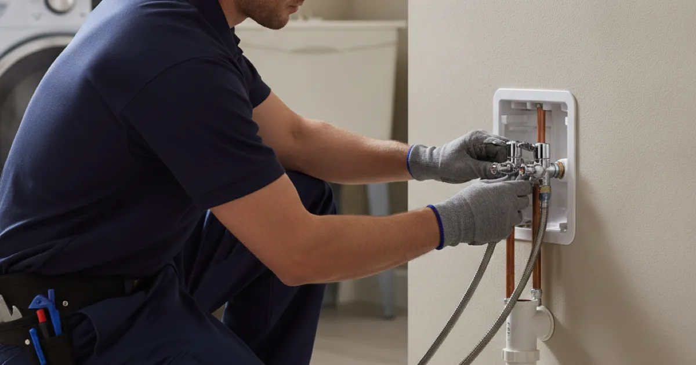

Appliance Hook-Up & Laundry Plumbing in Westchester County, NY
The connections behind a washer or dishwasher are exactly where a slow leak hides for months. We connect appliances so the joints hold and the shut-offs actually work.
- Licensed & Insured
- Upfront Pricing
- Clean, Respectful Technicians
- Residential & Light Commercial Plumbing

Washing machines and the hose that floods basements
A washing machine is connected to the water supply the whole time it is plugged in, not just when it runs. That is why a burst washer hose is one of the most common causes of a serious household flood — it can let go while nobody is home and run for hours.
Doing it properly means a few things:
- Braided steel hoses rather than the old rubber ones, which perish and split with age. Cheap insurance against an expensive flood.
- Working shut-off valves you can actually reach and turn, ideally a single-lever valve that closes both hot and cold at once.
- A proper standpipe and trap for the drain, at the right height, so it drains without siphoning or overflowing.
- A drain pan where the machine sits above finished space, so a leak is caught rather than finding the ceiling below.
The single best habit, if your valves are reachable: turn the water off at the washer when you go away for more than a day. It costs nothing and removes the most common flood risk in the house.
Dishwashers and the air gap
A dishwasher connection has a detail that is easy to skip and matters: it needs protection against dirty water siphoning back into it from the sink drain. That is done with either an air gap fitting on the counter or a high loop in the drain hose, depending on local code and setup.
Skipped, you can get waste water backing into the dishwasher, which is exactly as unpleasant as it sounds. It is a small thing done right at install and a genuine health matter done wrong, so it is not somewhere to cut a corner.
Beyond that, a dishwasher needs a proper supply connection, a secure drain connection to the disposal or waste, and a shut-off that lets it be serviced later without shutting down the whole kitchen.
Fridges, laundry rooms, and moving a hookup
Beyond washers and dishwashers, the common jobs are:
- Refrigerator water lines for ice makers and dispensers, where a proper valve and a quality line prevent the slow drip behind the fridge nobody notices until the floor is damaged.
- New laundry rooms — running supply, drain, and venting to a location that never had them, which is real plumbing rather than a hookup, and often part of a wider project.
- Relocating a washer or dishwasher, which means moving supply and drain rather than just reconnecting.
- Gas ranges and dryers, where the gas connection is licensed, permitted work — see our small business plumbing needs if this is for a commercial kitchen or laundry.
The Consumer Product Safety Commission and appliance makers both flag supply hoses as a leading cause of water damage claims; Consumer Reports has practical advice on preventing washing machine leaks that is worth a read if yours is connected with old rubber hoses.
What affects the cost
A straightforward appliance connection is a modest job; the cost rises with what has to change around it. We give you the price before starting.
Connecting an appliance where the supply, drain, or valve already exists is quick. Adding laundry to a room that never had it is a plumbing project rather than a hookup, since supply, drain, and venting all need running to the new location, and we scope that clearly before starting.
The habit that prevents floods
A washing machine is connected to the water supply the whole time it is plugged in, not just when it runs, which is why a burst washer hose is one of the most common serious household floods.
The single best habit, if your valves are reachable, is to turn the water off at the washer when you go away for more than a day. It costs nothing and removes the most common flood risk in the house. Braided steel hoses instead of old rubber ones are the other cheap insurance.
Common questions
Can I just connect a washer myself?
Many people do, and it is not complicated — but the details that prevent floods (steel hoses, a working shut-off, a proper standpipe) are exactly the ones most likely to be skipped. Worth getting right once.
Do dishwashers really need an air gap?
They need protection against backflow, which is either an air gap or a correctly formed high loop depending on local code. Skipping it risks waste water entering the dishwasher, so it is not optional.
My fridge water line is dripping. Big deal?
It can be, because it is behind the fridge where nobody looks, and a slow drip damages flooring over time. A proper valve and line solve it.
Can you add laundry to a room that never had it?
Yes, though it is a plumbing project rather than a hookup — supply, drain, and venting all need running to the new location. We will scope it and give you a clear picture before starting.
Should I turn the washer water off between uses?
At least when away for a day or more, if the valves are reachable. It removes the most common serious flood risk in a home for zero cost.
Connected safely, first time
Licensed, insured, and thinking about the flood that never happens.